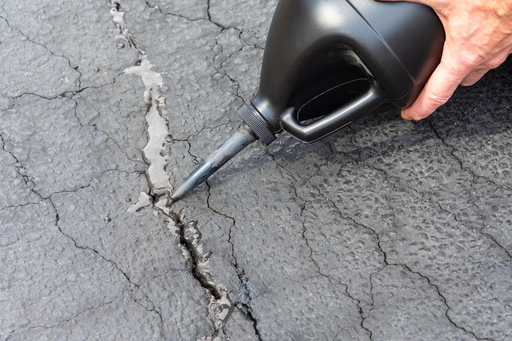
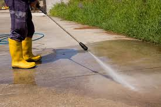
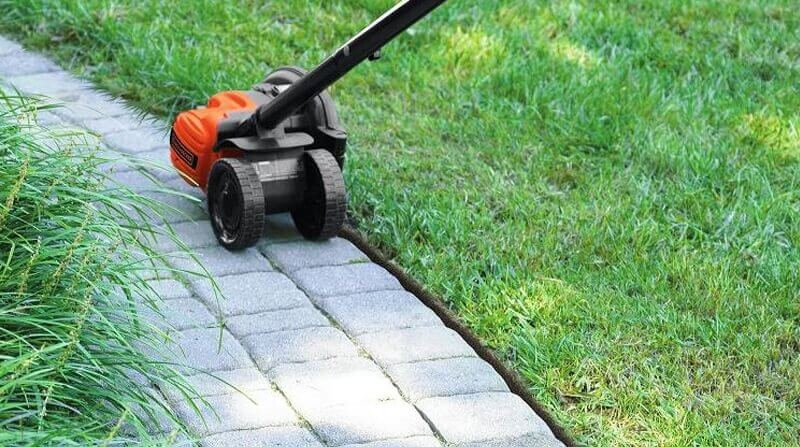

Why Seal Your Driveway?
- Guard Against the Elements: Shield your driveway from harsh weather conditions like rain, snow, and ice, preventing long-term damage.
- Boost Curb Appeal: A freshly sealed driveway enhances the visual appeal of your home, making it stand out with a sleek, black finish.
- Simplify Maintenance: Sealing creates a smoother surface, making it easier to clean off dirt, oil stains, and debris.
- Prevent Sun Damage: Protect your driveway from harmful UV rays that cause oxidation and deterioration of the asphalt over time.
- Save Time and Effort: Enjoy more of your free time while we handle the sealing. Trust the professionals to deliver a top-notch job, every time.
Additional Services
- Crack Filling
Filling and sealing cracks in surfaces to prevent further damage and improve appearance. - Pressure Washing
High-pressure cleaning of surfaces to remove dirt, grime, and stains. - Grass Edging
Trimming and defining the edges of grass areas for a neat and tidy appearance.